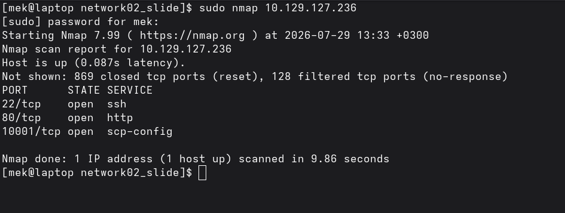
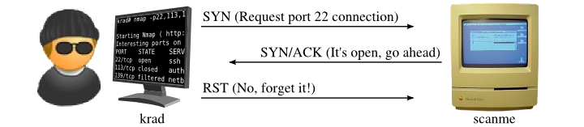
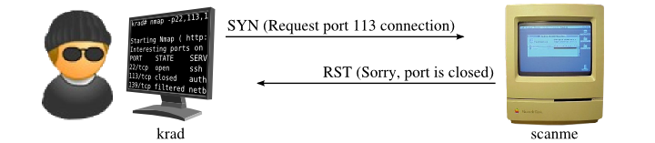
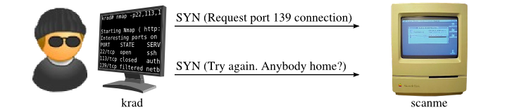
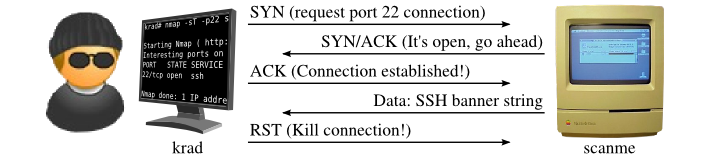
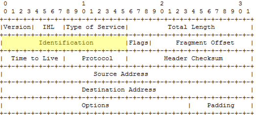
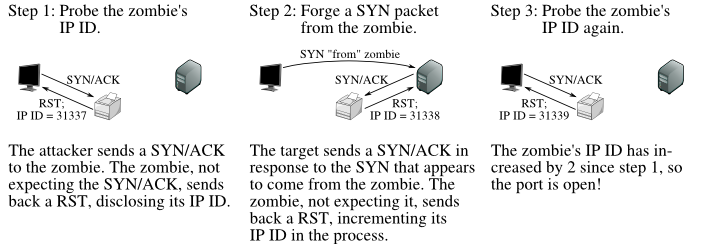
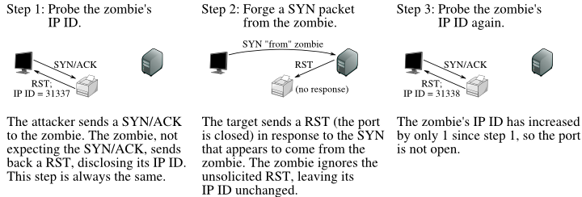
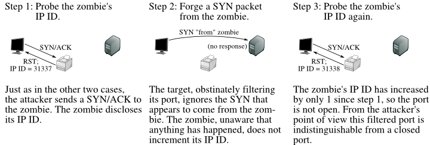

Ağ Temelleri & Protokoller Zafiyetler & Saldırılar Savunma & Sertleştirme
Presentation Roadmap & Agenda
This presentation is structured into 3 core logical blocks:
BLOCK 1 Network Scanning & Nmap
Topic 1.1: What is Nmap?
Topic 1.2: Why We Need Nmap
Topic 1.3: Scan Types & Techniques
BLOCK 2 Vulnerabilities & Attacks
Topic 2.1: Port Exploitation
Topic 2.2: Service Misconfigurations
Topic 2.3: Protocol Weaknesses
BLOCK 3 Defense & Hardening
Topic 3.1: Firewall Rules & IDS/IPS
Topic 3.2: Port Hardening
Topic 3.3: Best Practices & Mitigation
What is Nmap?
Network Mapper (Nmap) is the industry-standard, open-source tool for network discovery & security auditing.
OVERVIEW Key Capabilities
Host Discovery: Locates live hosts, IP addresses, and active devices on any network.
Port Scanning: Identifies open TCP/UDP ports listening for network connections.
Service & Version Detection: Queries open ports to determine application names and exact versions (-sV).
OS Fingerprinting: Analyzes network responses to detect remote Operating Systems (-O).
root@htb:~# nmap -sV 10.10.11.20
Starting Nmap 7.94 ( https://nmap.org )
Nmap scan report for target.htb (10.10.11.20)
Host is up (0.024s latency).
PORT STATE SERVICE VERSION
22/tcp open ssh OpenSSH 8.9p1 Ubuntu
80/tcp open http Apache httpd 2.4.52
443/tcp open ssl/http Apache httpd 2.4.52
3306/tcp open mysql MySQL 8.0.35
Nmap done: 1 IP address (1 host up) scanned
Why We Need Nmap
Essential use cases in network administration, security auditing, and threat defense.
VISIBILITY Network Inventory
Maintains complete network awareness and control.
Maps all connected systems & active IP ranges.
Detects unauthorized or rogue devices instantly.
Monitors service uptime and network availability.
AUDITING Vulnerability Analysis
Identifies potential attack surfaces before adversaries do.
Uncovers exposed / unnecessary open ports.
Flags unpatched, outdated service versions.
Automates exploit checks via Nmap Scripting Engine (NSE).
DEFENSE Policy Verification
Validates security controls & access rules.
Tests firewall filtering and ACL efficiency.
Verifies network segmentation controls.
Ensures compliance with security baselines.
Nmap Basic Scan

show nmap on live target
Nmap Port States & Responses
How Nmap interprets probe responses and firewall filtering behavior:
open
An application is actively listening and accepting connections on this port.
closed
Reachable (no firewall), but no application is running on this port. Nmap receives an RST flag response.
filtered
No response returned; Nmap cannot determine port state. Likely packets are dropped by a firewall or returned an ICMP error.
open | filtered
Common during UDP scans (-sU) or stealth scans (FIN/NULL). Open ports ignore packets without replying, making them indistinguishable from firewall filtering.
closed | filtered
(Extremely rare) Occurs during stealth "Idle scans" (-sI). Traffic was bounced off a Zombie machine, but mathematical results were inconclusive.
Nmap & Raw Packets
Why Nmap requires root privileges and how it bypasses standard operating system networking APIs.
STANDARD APPS OS Socket API
Normal network applications (browsers, SSH clients, curl) rely on operating system high-level socket APIs:
Uses standard kernel functions (connect(), send()).
OS kernel automatically handles TCP handshakes, sequence numbers, and packet flags.
Sudo Requirement: Raw socket access is restricted by the kernel for network security.
TCP-SYN (Stealth) Scan (-sS)
The default and most popular Nmap scan technique. Performs a "half-open" TCP scan without completing the 3-way handshake.
HALF-OPEN SCAN Core Mechanics
Privileges: Requires sudo / root privileges to craft raw TCP packets.
Stealth Mechanism: Never completes the TCP 3-way handshake; prevents connection logging by applications.
Packet Responses & Port Detection:
open
Target responds with SYN-ACK. Nmap detects port as open and immediately sends an RST to tear down the connection.
closed
Target responds with RST packet → Nmap detects port as closed.

Open Port Packet Exchange (SYN → SYN-ACK → RST)

Closed Port Packet Exchange (SYN → RST)
TCP-SYN Scan: Filtered Ports & Retransmission
Understanding how TCP-SYN scans handle packet loss, firewall drop rules, and probe retransmissions.
FILTERED STATE Firewall & Packet Drop Behavior
No Response Packet: If Nmap receives no packet back (or ICMP error), the port state is determined as filtered.
Firewall Filtering: Depending on rules, firewalls or routers may silently drop/ignore incoming SYN packets.
RETRANSMISSION Network Retries
Slow Networks & Retries: When target or network is slow/filtered, TCP sends multiple SYN packets before giving up.
Probe Retry: Example SYN scan on filtered NetBIOS port 139 re-sends probes: "Try again. Anybody home?"

Filtered Port Packet Trace (Multiple SYN Probes & Retransmissions)
sudo nmap -sS -p 139 target.htb
PORT STATE SERVICE
139/tcp filtered netbios-ssn
TCP Connect Scan (-sT)
The standard full-connection scan used when raw socket privileges are unavailable.
FULL HANDSHAKE Key Characteristics
Full Handshake: Completes the complete TCP 3-way handshake (SYN → SYN-ACK → ACK).
Unprivileged Execution: Used automatically when raw packets are unavailable (running Nmap without sudo) or scanning IPv6 networks.
Berkeley Sockets API: Issues standard OS system calls (connect()), identical to web browsers.
LOGGING & IDS Stealth Trade-off
Application Logging: Because a full TCP session is established, target applications are highly likely to log the connection event.
IDS / IPS Detection: Intrusion Detection Systems easily detect both SYN and Connect scans due to high-rate connection attempts.

Full Handshake Exchange & Session Teardown
nmap -sT target.htb (Unprivileged user)
PORT STATE SERVICE
22/tcp open ssh
UDP Scan (-sU)
Stateless UDP scanning mechanics, probe response mapping, and state determination.
STATE MAPPING Probe Response Rules
Probe Response
Assigned State
Any UDP response from target port
open
No response received (after retries)
open | filtered
ICMP Port Unreachable (Type 3, Code 3)
closed
Other ICMP Unreachable (Code 1, 2, 9, 10, 13)
filtered
Because UDP is connectionless, open ports rarely send back confirmations to empty probes.
UDP MECHANICS Empty Probes & Ambiguity
Stateless Protocol: UDP has no TCP-like handshakes or SYN/ACK packet confirmations.
Default Probes: Nmap sends empty UDP packets to most ports. If no error comes back, Nmap cannot distinguish an open port from a firewall drop $\rightarrow$ open | filtered.
sudo nmap -sU -v 192.168.0.42
PORT STATE SERVICE
53/udp open|filtered domain
67/udp open|filtered dhcpserver
111/udp open|filtered rpcbind
MAC Address: 00:02:E3:14:11:02 (Lite-on)
Kernel Caps: Operating systems limit ICMP error generation rate (e.g., Linux caps ICMP unreachable at ~1/sec).
High Scan Rates Backfire: Forcing fast scans with --min-rate 1000 causes targets to drop ICMP error packets, turning closed ports into false open|filtered results.
Payload Trigger: Sends real protocol payloads (e.g. DNS queries, SNMP requests) instead of empty packets, triggering real UDP replies to confirm open ports.
MANUAL TRICK Nping Hop-Count Analysis
Use nping to disambiguate open|filtered ports by comparing traceroute hop counts against a known closed port:
Compare Hop Counts on Target
# Test suspected open|filtered port
nping --udp --traceroute -c 13 -p 53 target.htb
# Test known closed port
nping --udp --traceroute -c 13 -p 54 target.htb
Analysis: If the hop count on port 53 matches the closed port (54), the target received the probe and dropped the ICMP reply $\rightarrow$ port 53 is actually closed.
UDP Scan Optimization Tactics
Overcoming UDP timeouts and ICMP rate limiting bottlenecks with targeted optimization flags.
PARALLELISM--min-hostgroup 100
Increases parallel host group scanning sizes.
Scans 100 targets simultaneously rather than waiting sequentially.
Bypasses single-host ICMP rate limiting bottlenecks by distributing probes.
FAST PROBES--version-intensity 0
Restricts service probes during version scans (-sV).
Only fires the most likely, high-probability service probes (intensity scale 0 to 9).
Dramatically reduces scan duration while maintaining key service identification.
TIMEOUT CONTROL--host-timeout <time>
Prevents single slow hosts from stalling entire scans.
Gives up on unresponsive targets after a set threshold (e.g., --host-timeout 30m).
Frees up scanner bandwidth for remaining network targets.
REAL-TIME ETA-v / -v2
Enables verbosity and scan progress tracking.
Prints real-time host status updates and completion ETAs.
Allows pressing <Space> during scans to inspect live completion percentage.
Stealth TCP Scans: NULL, FIN & Xmas
Advanced TCP firewall evasion techniques utilizing malformed packets based on RFC 793 compliance.
EVASION RATIONALE Why Use Malformed Packets?
Firewall Bypass: Non-stateful firewalls block incoming connections by dropping packets with SYN set and ACK cleared.
Bypassing Rules: Sending packets without SYN, RST, or ACK flags bypasses simple SYN-filtering rules.
RFC 793 RULE OS TCP Stack Response Logic
RFC 793 dictates how compliant operating systems must handle unexpected TCP packets without SYN/RST/ACK:
closedClosed Port: Target system MUST reply with an RST packet.
openOpen Port: Target sees an invalid packet and silently drops it without replying.
FLAG: -sN NULL Scan
Does not set any bits at all. The TCP header flag field is completely 0.
FLAG: -sF FIN Scan
Sets only the TCP FIN (Finish) bit used to close connections.
FLAG: -sX Xmas Scan
Sets FIN, PSH, and URG flags simultaneously ("lighting the packet up like a Christmas tree").
Stealth TCP Responses & Limitations
Interpreting probe responses and understanding non-RFC compliant operating system behavior.
Open ports drop probes without replying, making them indistinguishable from firewall drops.
LIMITATION OS Non-Compliance (Windows/Cisco)
RFC 793 Requirement: Works primarily on Linux, BSD, and Unix systems adhering strictly to RFC 793.
Windows / Cisco Behavior: MS Windows and Cisco devices respond with RST packets to malformed probes regardless of whether the port is open or closed, showing all ports as closed.
sudo nmap -sF -v target.htb
PORT STATE SERVICE
22/tcp open|filtered ssh
80/tcp open|filtered http
81/tcp closed hosts2-ns
TCP ACK Scan (-sA)
Mapping firewall rulesets, detecting stateful filtering, and identifying reachable ports.
FLAG: -sA Firewall Ruleset Mapping
Unique Objective: Unlike other scans, TCP ACK scan never determines open ports (or even open|filtered).
Primary Purpose: Used exclusively to map out firewall rulesets and determine whether firewalls are stateful or stateless.
Probe Flag: Sends probe packets with only the ACK flag set.
FIREWALL STATE Stateful vs. Stateless
Stateless Firewalls: Pass unexpected ACK probes through $\rightarrow$ ports respond with RST and are labeled unfiltered.
Stateful Firewalls: Track active connection tables; drop unexpected ACK probes without an active session $\rightarrow$ labeled filtered.
PORT STATE SERVICE
22/tcp unfiltered ssh
80/tcp filtered http
TCP Idle Scan (-sI)
"Blind" port scanning technique that bounces forged packets off an innocent zombie host.
BLIND SCANNING Evasion & Spoofing
Zero Direct Packets: Attacker scans target without sending a single packet from their own IP address directly to the target.
Zombie Host Bouncing: Traffic is bounced off an idle "zombie" host. Target IDS logs will list the innocent zombie as the attacker.
RAW PACKETS Forging the SYN Probe
Craft TCP Payload: Sets SYN = 1 requesting target port connection.
IP Header Spoofing: Sets Destination IP = Target IP, and Source IP = Zombie IP!

16-Bit IP Packet Identification Field (Increments Sequentially)
sudo nmap -Pn -sI <zombie_ip> <target_ip>
Idle scan using zombie zombie.htb (10.10.10.50)
PORT STATE SERVICE
22/tcp open ssh
Idle Scan: Open Port Execution
Step-by-step packet flow and IP ID increment analysis (+2) when scanning an open target port.
STEP-BY-STEP Open Port IP ID Flow
Step 1: Probe Zombie's Initial IP ID
Attacker sends SYN-ACK to zombie. Zombie responds with RST, disclosing IP ID = 31337.
Step 2: Forge SYN to Target
Target port is OPEN; sends SYN-ACK to zombie. Zombie sends RST to target, incrementing its IP ID to 31338.
Step 3: Re-probe Zombie's IP ID
Attacker probes zombie again. Zombie returns RST with IP ID = 31339.
Verdict: Total IP ID incremented by +2 $\rightarrow$ Target Port is open!

Figure: Open Port Sequence (Attacker → Zombie → Target)
Idle Scan: Closed & Filtered Ports
Comparing packet traces and IP ID increment behaviors (+1) for closed and filtered target ports.
INCREMENT +1 Closed Port Sequence
Target sends an unsolicited RST to zombie. Zombie ignores it and sends no packet. Zombie IP ID increments by only +1 during final probe.

Closed Port Trace (Target sends RST → Zombie ignores)
INCREMENT +1 Filtered Port Sequence
Target firewall drops packet. Zombie receives nothing and sends no packet. Zombie IP ID increments by +1 during final probe (indistinguishable from closed).

Filtered Port Trace (Firewall drops → Zombie unaware)
Host Discovery & Ping Flags
Controlling how Nmap discovers active hosts, handles ARP, and manages DNS resolution:
-Pn
Disables host discovery and assumes the host is alive.
-sn
Skips port scan; only checks if target host is alive or not (ping sweep).
-PR
Performs ARP ping discovery for local subnet scanning.
-n
Disables reverse DNS resolution to speed up scanning.
--disable-arp-ping
Disables default ARP ping probes on local Ethernet networks.
Debug & Trace Flags
Inspecting packet exchanges, scan decisions, and real-time progress:
--packet-trace
Shows a detailed trace of every packet sent and received by Nmap.
--reason
Displays the precise reason (e.g. syn-ack, rst, or no-response) why Nmap assigned a specific port state.
--stats-every=5s
Prints scan status and progress metrics periodically every 5 seconds.
Firewall Evasion & Spoofing
Bypassing firewall packet filters and masking source origins:
--source-port
Changes the source port to bypass firewall rules (e.g. --source-port 53).
"If the traffic is coming FROM port 53 (DNS), it must be legitimate DNS traffic. Let it through."
-S
Spoofs the source IP address of scan packets to conceal the true scanner identity.
Nmap Scripting Engine (NSE)
Automating vulnerability detection, service enumeration, and exploitation with Lua scripts:
What is NSE?
NSE allows users to write and share Lua scripts to automate complex network tasks, vulnerability scanning, and advanced service discovery.
14 Total Categories
Over 600+ scripts organized into 14 distinct functional categories ranging from passive discovery to active exploitation.
Default Script Execution
The -sC flag runs the standard set of safe, fast default scripts against open ports.
root@htb:~# NSE Command Syntax
# Run default scripts (-sC)
sudo nmap 10.10.11.20 -sC
# Run all scripts in a category (e.g. vuln)
sudo nmap 10.10.11.20 --script vuln
# Run specific scripts by name
sudo nmap 10.10.11.20 --script http-enum,smb-os-discovery
NSE Script Categories
Nmap Scripting Engine (NSE) is another handy feature of Nmap. It provides us with the possibility to create scripts in Lua for interaction with certain services. There are a total of 14 categories into which these scripts can be divided:
auth
Determination of authentication credentials.
broadcast
Scripts, which are used for host discovery by broadcasting and the discovered hosts, can be automatically added to the remaining scans.
brute
Executes scripts that try to log in to the respective service by brute-forcing with credentials.
default
Default scripts executed by using the -sC option.
discovery
Evaluation of accessible services.
dos
These scripts are used to check services for denial of service vulnerabilities and are used less as it harms the services.
exploit
This category of scripts tries to exploit known vulnerabilities for the scanned port.
external
Scripts that use external services for further processing.
fuzzer
This uses scripts to identify vulnerabilities and unexpected packet handling by sending different fields, which can take much time.
intrusive
Intrusive scripts that could negatively affect the target system.
malware
Checks if some malware infects the target system.
safe
Defensive scripts that do not perform intrusive and destructive access.
version
Extension for service detection.
vuln
Identification of specific vulnerabilities.
Introduction to Masscan
The fastest Internet-scale port scanner: scanning the entire IPv4 Internet in under 6 minutes.
THE SCALE PROBLEM Why Nmap Struggles at Scale
Nmap Bottlenecks: Nmap relies on synchronous tracking and OS kernel socket stacks. Scanning large subnets (/16 or /8) takes days or weeks.
Resource Limits: OS network stacks overhead caps packet rates and causes memory limits when scanning millions of targets simultaneously.
MASSCAN SOLUTION Custom Asynchronous Engine
10 Million pps: Capable of transmitting 10,000,000 packets per second (`10 Mpps`).
Internet-Wide Scanning: Scans the entire IPv4 address space (0.0.0.0/0) for open ports in under 6 minutes.
ARCHITECTURE How Masscan Achieves Speed
Custom TCP/IP Stack: Bypasses the OS kernel networking stack completely using raw socket drivers (PF_RING / libpcap).
Asynchronous Transmit/Receive: Transmits raw SYN probes continuously on a dedicated thread without waiting for replies. Responses are handled independently by a receiver thread.
Lockless Ring Buffers: Eliminates thread lock contention and memory allocation bottlenecks.
Masscan Syntax: Designed intentionally with Nmap-like CLI options for instant familiarity.
Nmap vs. Masscan Comparison
Architectural differences, feature tradeoffs, and the optimal combined reconnaissance workflow.
ARCHITECTURAL DIFFERENCES Feature Matrix
Feature
Nmap
Masscan
Architecture
Synchronous / OS Sockets
Asynchronous Raw Stack
Max Scan Rate
~1k – 10k pps
Up to 10M pps
Primary Purpose
Deep auditing & fingerprinting
Rapid internet-scale discovery
Service Detection
Full Engine (-sV)
Basic Banners (--banners)
Scripting & OS
NSE Scripts & OS Detection
None (Port discovery only)
Masscan trades script depth for raw speed; Nmap trades speed for exhaustive analytical depth.
BEST PRACTICE Hybrid Reconnaissance Workflow
Combine both tools for maximum efficiency when auditing large enterprise networks:
Phase 1: Rapid Masscan Enumeration
Run Masscan at high rate across large CIDR blocks (/16) to instantly identify live hosts & open ports.
Phase 2: Targeted Nmap Auditing
Feed Masscan open IP/port output directly into Nmap (nmap -iL targets.txt -sV -sC) for deep vulnerability analysis.
Essential CLI syntax, key configuration flags, and packet rate tuning best practices.
CLI OPTIONS Essential Configuration Flags
--rate <pps> Specifies transmit rate in packets per second (e.g. --rate 100000).
--banners Enables TCP banner grabbing (grabs HTTP Server headers, SSH version strings, etc.).
--exclude <ip> Excludes sensitive IP addresses or subnets from the scan range.
-oJ <filename> Saves scan results in structured JSON format for automated parsing.
RATE TUNING PITFALL Bandwidth Oversaturation Risk
Local Router Saturation: Setting --rate higher than your local connection or ISP uplink can handle causes dropped packets.
False Negatives: Dropped incoming SYN-ACK packets lead to missed open ports. Always benchmark bandwidth before setting rates over 100,000 pps.
Full Port Range Subnet Scan
# Scan top web ports across a /16 subnet at 100,000 pps
sudo masscan -p80,443 10.10.0.0/16 --rate 100000 -oJ web_scan.json
# Full 65,535 port scan with banner grabbing
sudo masscan -p1-65535 10.10.20.0/24 --banners --rate 25000